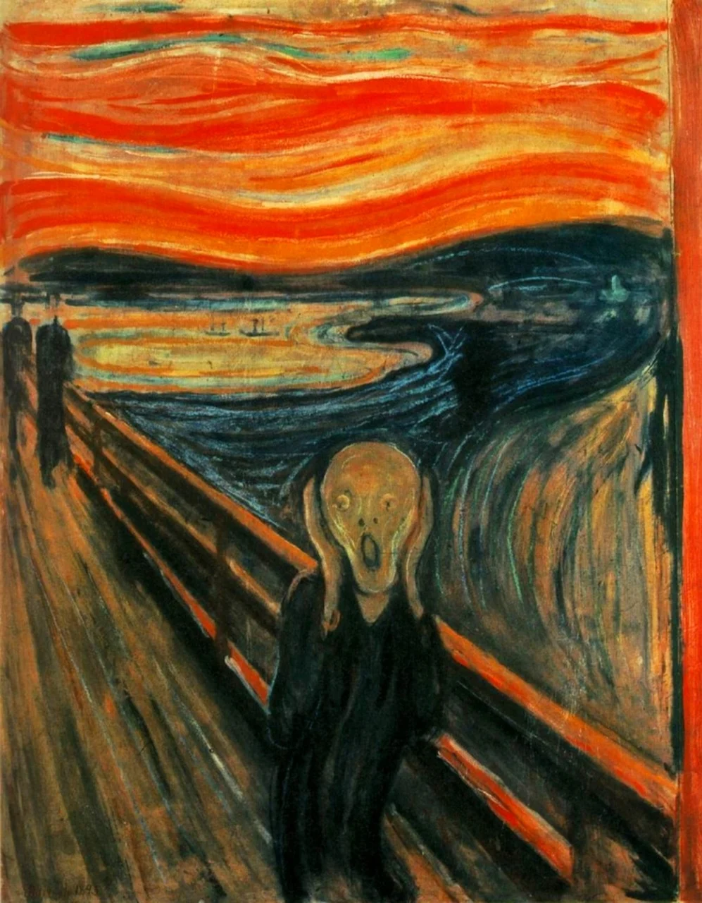

O Grito
Artista: Edvard Munch
Ano: 1893
Descrição: O Grito é um quadro que exibe uma pessoa que olha aterrorizada para o espectador. O cenário é uma ponte e há outras duas pessoas que caminham sem notar o desespero da personagem principal